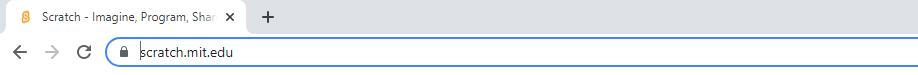

Scratch starten und einrichten
Programm starten
Scratch ist ein Programm, welches wir über das Internet in einem Browser ausführen. Öffne dafür zunächst den Browser deiner Wahl, z.B.:
 Google Chrome
Google Chrome Firefox
Firefox Microsoft Edge
Microsoft Edge
URL-Adresse eingeben
Jetzt sagen wir dem Browser, dass wir die Scratch-Seite ansehen möchten. Gib dafür in die Adresszeile des Browsers folgenden
Text ein und bestätige die Eingabe abschließend mit der Enter-Taste.
https://scratch.mit.edu/

Scratch Editor öffnen
Du wirst nun automatisch auf die Übersichtsseite von Scratch weitergeleitet. Diese sieht dann in etwa so aus:
Wir wollen nun den Scratch-Editor öffnen, in dem wir den eigentlichen Programmcode schreiben werden. Klicke dafür auf den Link "Entwickeln" im oberen Menü.
Es öffnet sich nun der Editor und du solltest ein Fenster ähnlich diesem sehen:
Editor Einstellungen
Nun kann es eigentlich schon fast losgehen. Achte bitte noch darauf, dass in deinem Scratch-Editor die korrekte Sprache eingestellt ist. Dies kannst du über die kleine Weltkugel im oberen Menü kontrollieren. Klicke diese an und stelle sicher, dass in der Liste, welche sich öffnet, "Deutsch" ausgewählt ist.
Beachte weiterhin, dass du deinen Browser die ganze Zeit geöffnet lässt. Wenn du den Browser schließt und vorher dein Programm nicht gespeichert hast, dann geht dein Programm verloren!